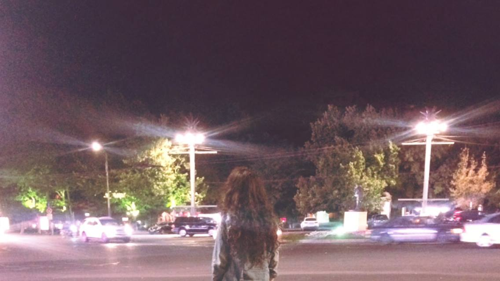
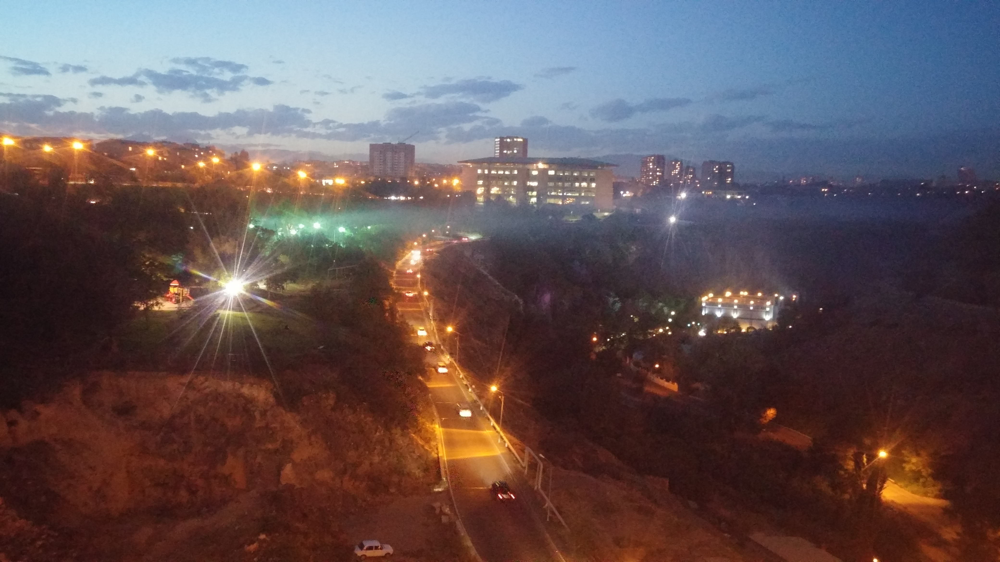

The Container of Our Warmest Memories
~ heavenly summer nights ~
Have you ever been in Yerevan during a late July nighttime? If so, did you hear the distant voices of the people talking and the children's laughter and the sound of the wind playing with trees? Did you feel that suffocating but pleasant hot air?
~ and lovely winter evenings ~
Have you walked the streets of Yerevan, when it is a sweet winter evening? Did you see how beautiful everything was with those fluffy snowflakes falling all over you?

